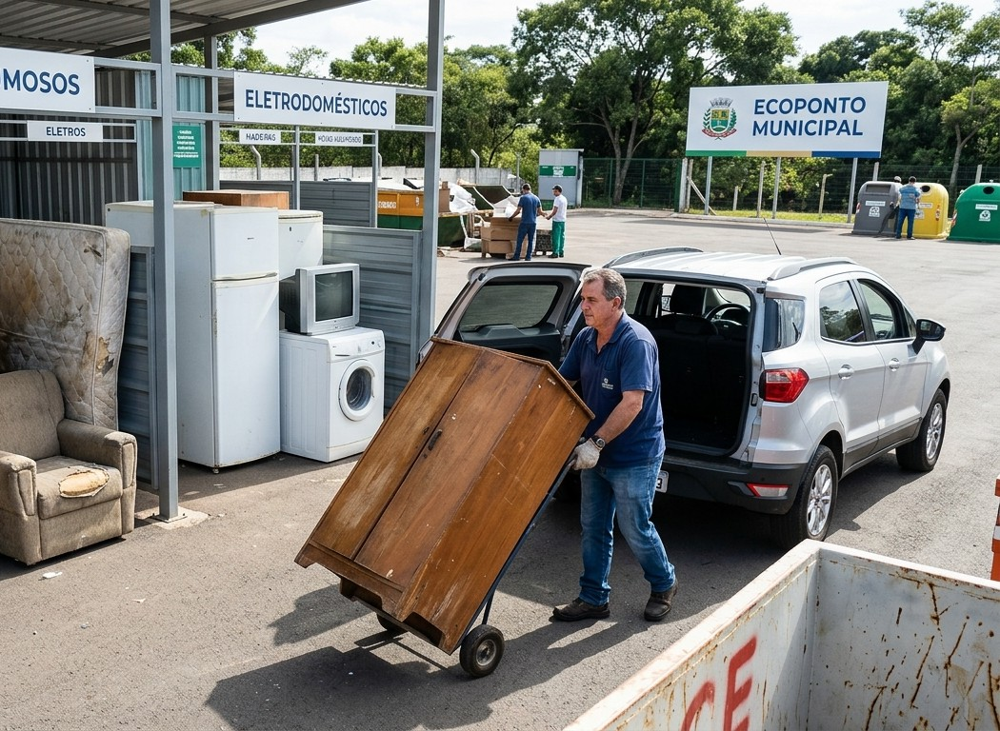
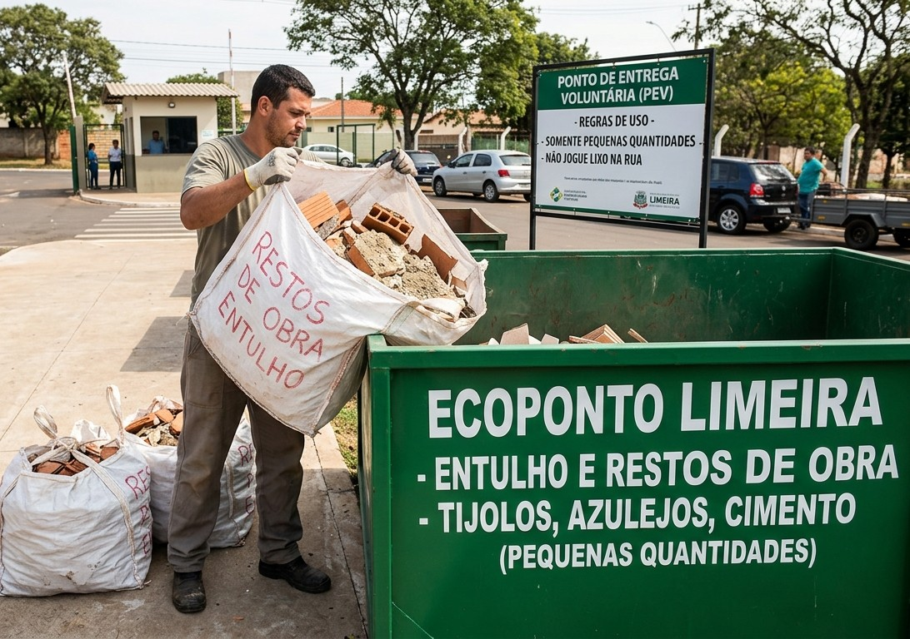
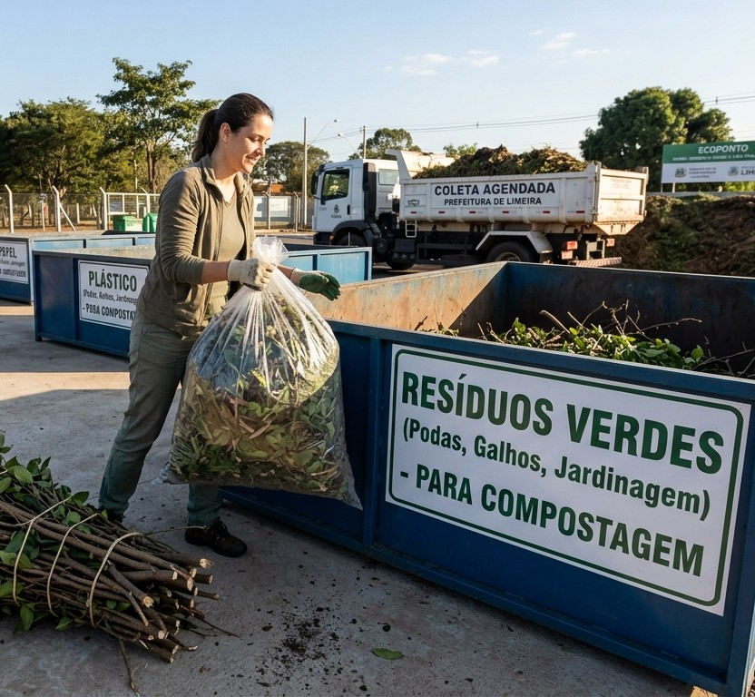

Gestão Sustentável e Pontual de Resíduos
A WasteWise promove uma gestão de resíduos
sustentável e eficiente, incentivando o
descarte correto, o reaproveitamento e a
redução dos impactos ambientais.
Nosso objetivo é contribuir para cidades mais
limpas, organizadas e conscientes, mostrando
que pequenas atitudes podem fazer uma grande
diferença para o meio ambiente e para a
qualidade de vida da população.

Por que a gestão de resíduos é importante?
A forma como descartamos nossos resíduos
influencia diretamente o meio ambiente.
Quando o lixo é separado e destinado
corretamente, materiais que poderiam ser
descartados podem ser reciclados, reutilizados
ou transformados em novos produtos.
A coleta seletiva também ajuda a reduzir a
quantidade de resíduos enviados aos aterros
sanitários, evita a poluição de ruas, rios e
terrenos e contribui para um sistema de
descarte mais organizado.
Organização
Cidades limpas e organizadas dependem de uma coleta eficiente e do descarte correto dos resíduos.
Previsibilidade
Conhecer os horários e dias de coleta evita o acúmulo de resíduos e facilita a organização.
Responsabilidade
Separar os resíduos e descartá-los corretamente ajuda a preservar o meio ambiente.
CATEGORIA
Conheça as categorias de resíduos
O descarte correto começa pelo conhecimento dos materiais que produzimos diariamente. No WasteWise, os resíduos são apresentados em duas categorias principais: domiciliares e especiais, cada uma com características e cuidados específicos.
Resíduos Domiciliares
São aqueles gerados nas atividades do dia a dia, principalmente nas residências. Incluem resíduos orgânicos, recicláveis, rejeitos, materiais volumosos, entulhos de construção e resíduos verdes. A separação adequada desses materiais facilita a reciclagem, o reaproveitamento e a destinação correta.
Resíduos Especiais
São materiais que exigem atenção diferenciada devido às suas características e aos possíveis impactos ambientais. Entre eles estão pilhas, baterias, lâmpadas fluorescentes, medicamentos vencidos, óleo de cozinha, eletrônicos e produtos químicos. Seu descarte deve seguir orientações específicas para evitar a contaminação ambiental e proteger a saúde da população.
Separar corretamente é um pequeno gesto que gera grandes mudanças. Conhecer as categorias é o primeiro passo para construir hábitos mais sustentáveis e contribuir para um planeta mais limpo.
CATEGORIA
Resíduos Domiciliares
Resíduos Orgânicos
Restos de alimentos, cascas e borra de café. Vão para a coleta comum ou compostagem.
Clique para ver a imagem ↻
Resíduos Recicláveis
Plástico, papel, vidro e metal limpos. Devem ser encaminhados para a coleta seletiva.
Clique para ver a imagem ↻
Resíduos Perigosos
Pilhas, baterias, lâmpadas e medicamentos devem ser levados a pontos de coleta adequados.
Clique para ver a imagem ↻
Resíduos Rejeitos
Lixo do banheiro e materiais engordurados. Vão para o aterro sanitário na coleta comum.
Clique para ver a imagem ↻
CATEGORIA
Resíduos Especiais
Resíduos Volumosos
Móveis velhos, colchões e eletrodomésticos. Devem ser agendados para recolha ou levados diretamente ao Ecoponto.
Clique para ver a imagem ↻
Entulho de Construção
Restos de obras, tijolos, azulejos e cimento em pequenas quantidades. Devem ser descartados nos pontos de entrega voluntária da cidade.
Clique para ver a imagem ↻
Resíduos Verdes
Podas de árvores, restos de jardinagem e folhagem. Requerem descarte próprio para compostagem ou recolha agendada.
Clique para ver a imagem ↻
DESCARTE
Descarte correto de resíduos
O descarte correto dos resíduos é essencial para preservar o meio ambiente e evitar a poluição. Cada material exige cuidados específicos, e conhecer suas formas de descarte contribui para a redução dos impactos ambientais e para um futuro mais sustentável.
Resíduos Orgânicos
São materiais de origem animal ou vegetal, como restos de alimentos, cascas de frutas, verduras e folhas. Quando separados corretamente, muitos desses resíduos podem ser destinados à compostagem, processo que transforma matéria orgânica em adubo natural, reduzindo a quantidade de lixo encaminhada aos aterros.
Resíduos Recicláveis
São materiais que podem passar por processos de transformação e ser utilizados na fabricação de novos produtos, como papel, plástico, vidro e metal. A separação adequada e o encaminhamento à coleta seletiva contribuem para a economia de recursos naturais, a redução da poluição e o fortalecimento da reciclagem.
Resíduos Perigosos
São materiais que apresentam riscos à saúde humana ou ao meio ambiente devido às suas propriedades químicas, tóxicas, inflamáveis ou corrosivas. Exemplos incluem tintas, solventes e determinados produtos químicos. Esses resíduos exigem cuidados especiais e devem ser encaminhados a locais autorizados para seu recebimento e tratamento.
Resíduos Rejeitos
São resíduos que, após consideradas as possibilidades de tratamento e recuperação disponíveis, não apresentam alternativas viáveis de reaproveitamento. Entre os exemplos estão papel higiênico usado, fraldas descartáveis e determinados materiais sanitários. Devem ser acondicionados adequadamente e encaminhados à coleta destinada aos rejeitos.
Resíduos Especiais
São materiais que necessitam de sistemas específicos de coleta e destinação devido às suas características e aos possíveis impactos ambientais. Incluem pilhas, baterias, lâmpadas fluorescentes, medicamentos vencidos, equipamentos eletrônicos e óleo de cozinha usado. O descarte deve ser realizado em pontos de coleta apropriados, evitando riscos à saúde e à natureza.
Descartar corretamente é mais do que separar o lixo: é assumir um compromisso com a preservação ambiental e com a qualidade de vida das futuras gerações.
DESCARTE
Resíduos Orgânicos
Resto de Alimentos
Coloque em sacos bem fechados para a coleta comum ou destine para a compostagem.
Clique para ver a imagem ↻
DESCARTE
Resíduos Recicláveis
Garrafa Pet e Plásticos
Lave, amasse e coloque na coleta seletiva (com a tampa).
Clique para ver a imagem ↻
Caixas e Papéis
Dobre para economizar espaço e coloque secos na coleta seletiva.
Clique para ver a imagem ↻
Latas de Alumínio
Enxágue, empurre a tampa para dentro e vá para a coleta seletiva.
Clique para ver a imagem ↻
Vidro
Se estiver partido, embale num papelão identificado antes de ir para a coleta seletiva.
Clique para ver a imagem ↻
DESCARTE
Resíduos Perigosos
Pilhas e Baterias
Armazene em um recipiente seco e leve aos pontos de coleta em supermercados, lojas de eletrônicos ou ecopontos. Nunca jogue no lixo comum.
Clique para ver a imagem ↻
Lâmpadas Fluorescentes
Guarde na embalagem original ou envolva em papelão para não quebrar. Entregue em ecopontos ou locais de venda habilitados para logística reversa.
Clique para ver a imagem ↻
Medicamentos Vencidos
Mantenha nas embalagens e leve aos pontos de recolha em farmácias ou unidades de saúde. Não jogue no vaso sanitário nem no lixo comum.
Clique para ver a imagem ↻
Óleo de Cozinha Usado
Espere esfriar, armazene em uma garrafa PET bem fechada e entregue em postos de coleta específicos, ecopontos ou cooperativas.
Clique para ver a imagem ↻
Lixo Eletrônico
Leve os aparelhos quebrados ou antigos a pontos de coleta de lixo ou mutirões de reciclagem eletrônica da cidade.
Clique para ver a imagem ↻
Tintas, Solventes e Produtos Químicos
Não despeje em ralos ou no solo. Entregue as sobras e latas nos postos de recolha de resíduos perigosos ou ecopontos municipais.
Clique para ver a imagem ↻
DESCARTE
Resíduos Rejeitos
Lixo do Banheiro
Coloque os resíduos em sacos bem fechados e disponibilize-os para a coleta pública no dia e horário corretos.
Clique para ver a imagem ↻
DESCARTE
Resíduos Especiais
Móveis Velhos, colchões e Eletrodomésticos
Agende a coleta municipal (Cata-Treco) ou leve direto ao Ecoponto. Nunca abandone na rua.
Clique para ver a imagem ↻
Restos de Obra, Tijolos, Azulejos e Cimento
Ensaque em pequenas quantidades e entregue nos Pontos de Entrega Voluntária (PEV/Ecoponto).
Clique para ver a imagem ↻
Podas de Árvores, Jardinagem e Folhagens
Ensaque ou amarre em fardos para compostagem ou solicite recolha agendada.
Clique para ver a imagem ↻
ECOPONTO
Consulta de Coleta
Nós facilitamos o descarte correto de resíduos por meio de ecopontos, incentivando a separação, a reciclagem e a preservação do meio ambiente, deixe seu lixo no ecoponto mais perto do seu bairro.
Digite seu CEP abaixo para consultar a coleta:
🚚 Dias:
⏰ Horário estimado:


CONSCIENTIZAÇÃO
Campanhas
A WasteWise promove campanhas para conscientizar a população sobre a importância do descarte correto e da separação dos resíduos. A iniciativa incentiva a reciclagem, o uso dos ecopontos e atitudes sustentáveis, contribuindo para uma cidade mais limpa, organizada e sustentável.
DICAS
Sustentabilidade na prática
- ♻️ Separe os resíduos recicláveis dos orgânicos.
- 🗑️ Descarte corretamente cada tipo de material.
- 📍 Utilize os ecopontos para resíduos específicos.
- 🚛 Confira o horário da coleta da sua região.


CONTATO
Fale com a gente
Tem dúvidas, sugestões ou quer fazer um evento? Envie mensagem.